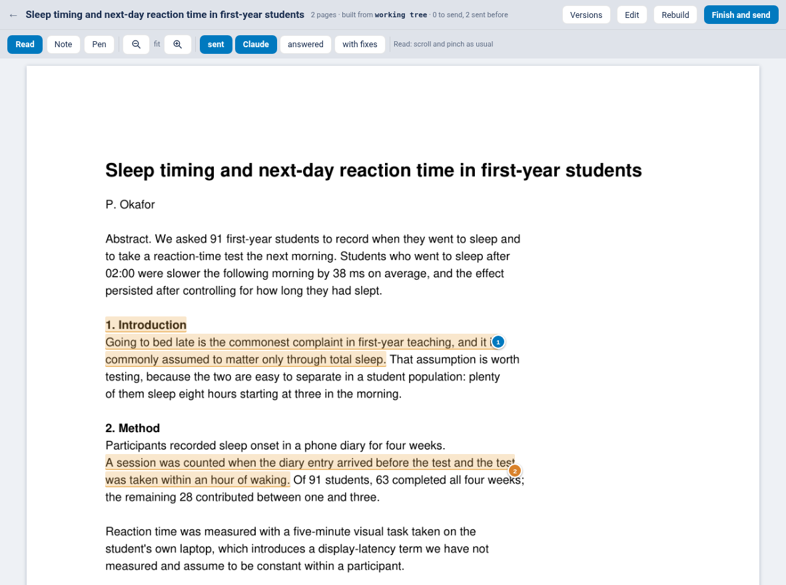
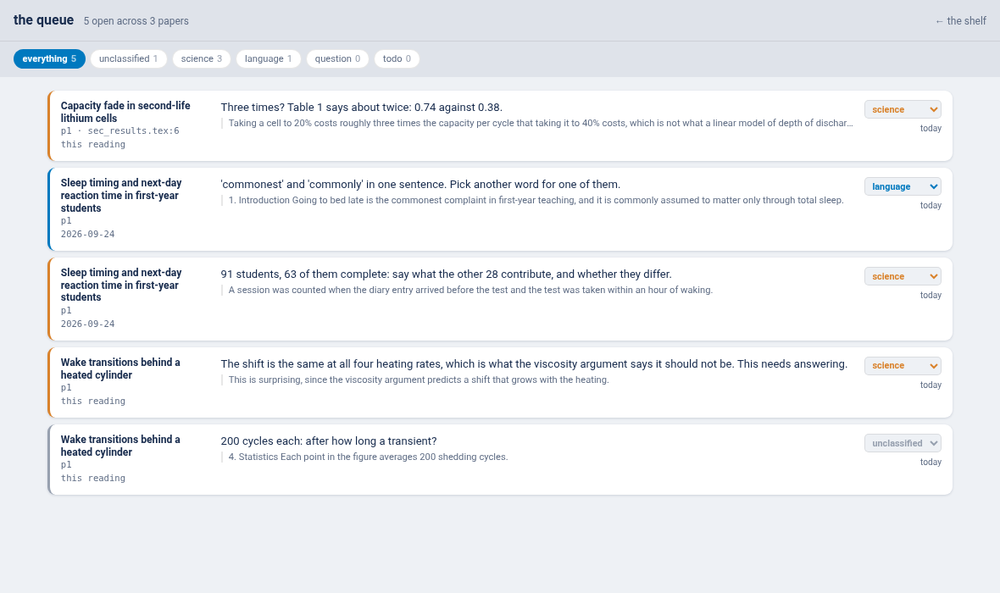

Reading a paper
The shelf, the reader, and what a round is.
Adding one
paperpen add ~/papers/my-manuscript # finds the main .tex, builds it once
paperpen add ~/inbox/referee-draft.pdf # a PDF with no source behind it
paperpen list
add looks for the .tex holding
\documentclass, takes the paper's name from its
\title, compiles it once to check, and registers it. A paper that
does not compile is not registered. --main, --name
and --task override what it worked out.
SyncTeX is what makes a note worth having. Build with
latexmk -pdf -synctex=1, which is what paperpen does for you. A
paper without it can still be read and marked up; its notes carry a page and a
quoted sentence, and no source line.
What a paper is, on the shelf
Two fields decide how a paper behaves, and both can be set from the card or
from paperpen about:
| Field | Values | What it changes |
|---|
| kind | mine, coauthor, student, referee |
Who the reading is for, and the default delivery. |
| delivery | repo, folder, pdf |
Where a finished round goes. |
paperpen about my-manuscript --kind mine --delivery repo
paperpen about referee-draft --brief "Is the claim in Sec. 4 supported?"
The brief is shown on the card and in the reader: what this reading is
for, in one line, written before it starts.
The reader

A note is made on a sentence, a word, a figure or a region. The
selection is the anchor, so a note is never vague about what it is
about.
Three tools: Read moves the paper, Note types one, Pen
writes on it. A finger scrolls and only a stylus draws, so the paper can be
moved with a hand resting on the glass.
- Sentence or word. The text layer is cut into sentences, each
keeping the boxes it occupies, so tapping a line means the sentence and not
the line.
- Handwriting is kept as ink, cropped to the page around it. There
is no OCR: the picture is the note, and whoever picks it up reads it.
- Rebuild compiles again when the source has moved past the PDF on
show. The reader says when that has happened.
Rounds
A round is a reading, not a note. It opens with the first note and stays
open until it is finished, which is when it is delivered:
paperpen rounds my-manuscript # every round, and how each stands
paperpen finish my-manuscript # deliver it the way this paper is delivered
paperpen finish referee-draft --as pdf # or override, once
Delivery is one of three:
| repo | Commits review/<date>/ into the
paper's own repository: NOTES.md to act on,
notes.json as the record, ink/<id>.png for
each handwritten note. |
|---|
| folder | The same directory, written beside the paper and not
committed. |
|---|
| pdf | <main>-notes-<date>.pdf: the
paper with every note in the margin, for somebody who does not have the
repository. |
|---|
Whatever the delivery, the round is also recorded locally. That is
deliberate: a draft sent back as a PDF leaves no trace anywhere else, and a
repository can be on a machine that is not this one.
After Finish and send
Finish and send closes the round and commits
review/<date>/ into the paper's repository. Answering the
notes happens in the paper's checkout, by an agent. paperpen starts one there
itself, headless, the moment the round is delivered, and that is the usual way
(An agent above the papers). The other way is a
session you start by hand, pointed at the round: any LLM that can run a shell
command will do, and Claude Opus is what we have used.
The agent paperpen starts is Claude Code by default, and OpenAI Codex with
--runner codex: for one run on paperpen agent or
paperpen review, for a paper with paperpen about <paper>
--runner codex, or for every paper with PAPERPEN_RUNNER=codex.
Claude Code is given a list of what it may do, paperpen's own commands and
reading files. Codex has no such list and is fenced by its
workspace-write sandbox instead: it may write the paper's checkout
and paperpen's data and cache, and is told not to commit. paperpen
onboard --check says which of the two is installed and which is in
force.
Each note
carries the file and line of LaTeX it is about, its class, and the sentence it
sits on, and a handwritten note is a picture, ink/<id>.png,
which the model reads directly. A session therefore needs the round and little
else:
Work through review/<date>/NOTES.md in this repository. For each note, change
the LaTeX it points at, or say why not; for a handwritten note, read its
ink/<id>.png. Rebuild the paper, close each note with
paperpen resolve <paper> <note-id> done|rejected "what was done"
and commit.
Whether a round's corrections go in, and when, is a decision about the
paper: nothing is committed until you say so, in the reader or with
paperpen commit. The commit that comes back is what the
next reading is read against, and paperpen versions <paper>
shows it beside the draft the notes were written on. This applies to a paper
delivered into a repository; a draft sent back as a PDF is corrected by
whoever wrote it.
The queue

Every open note, from every paper, oldest first, because the
work is rarely "read a paper" and usually "nine notes are still
open".
A note carries a class (SCIENCE, LANGUAGE, QUESTION, TODO) or is left on
AUTO for whoever picks it up to decide. Closing one says what was done:
paperpen classify my-manuscript 2026-04-02-07 SCIENCE
paperpen resolve my-manuscript 2026-04-02-07 done "rewrote the paragraph"
paperpen resolve my-manuscript 2026-04-02-08 rejected "the figure is right as it is"
Both work from any directory, and both write wherever that round is kept:
the copy in the paper's repository, so the NOTES.md a co-author
reads is regenerated, and the local record.